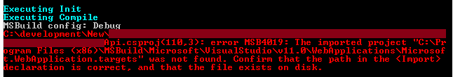

Earlier today, I ran into the following error when trying to build a new WebApi solution using the command-line and MSBuild:

This is odd as v11 is Visual Studio 2012 and don’t even have 2012 installed. The issue manifests when you try to build the solution with: msbuild /t:Clean;Rebuild /v:q /p:Configuration=$projectConfig $source_dir\$projectName.sln /p:Platform="Any CPU"
The cause and solution is discussed on Stack Overflow - TL;DR version is this is due to adding the feature for older versions of Visual Studio, but then not setting the correct version number. To fix the issues, remove the following lines from your csproj file:
<PropertyGroup>
<VisualStudioVersion Condition="'$(VisualStudioVersion)' == ''">10.0</VisualStudioVersion>
<VSToolsPath Condition="'$(VSToolsPath)' == ''">
$(MSBuildExtensionsPath32)\Microsoft\VisualStudio\v$(VisualStudioVersion)</VSToolsPath>
</PropertyGroup>
After that, the build succeeds :)
P.S.: Even changing the VisualStudioVersion to 12.0 does not work.